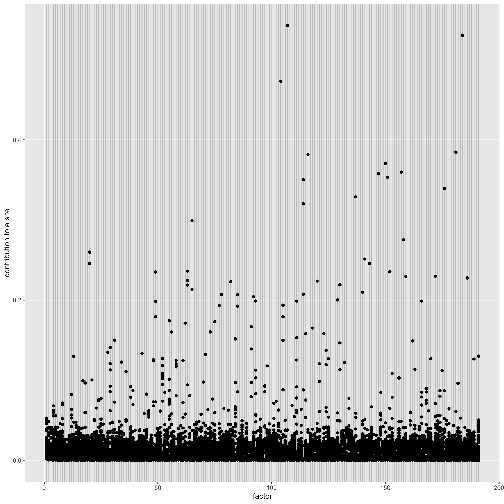
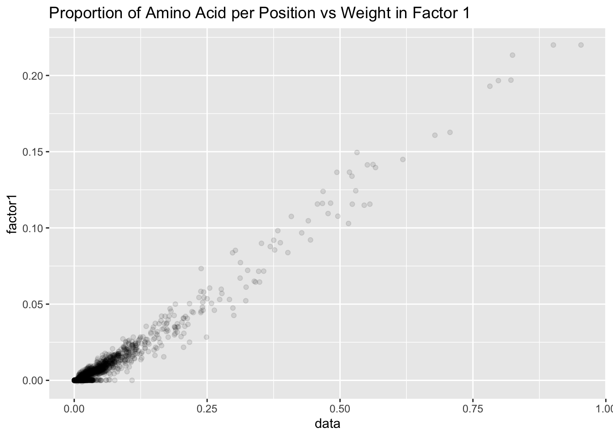
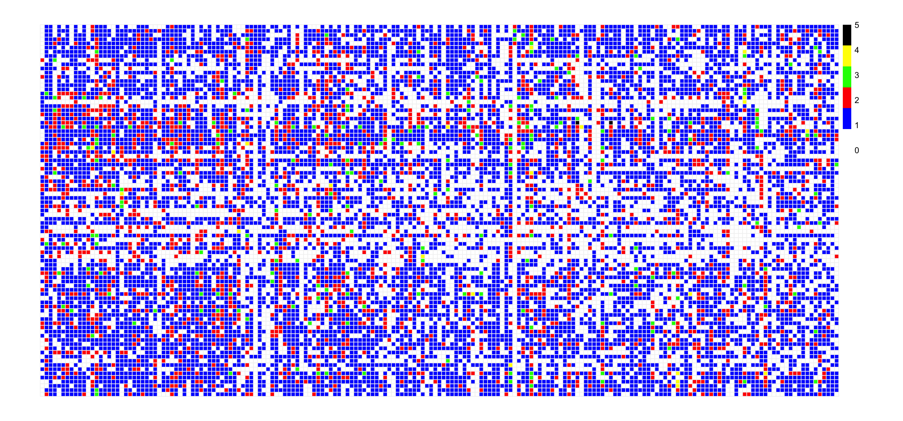

Last updated: 2020-04-01
Checks: 7 0
Knit directory: aaint/
This reproducible R Markdown analysis was created with workflowr (version 1.6.0). The Checks tab describes the reproducibility checks that were applied when the results were created. The Past versions tab lists the development history.
Great! Since the R Markdown file has been committed to the Git repository, you know the exact version of the code that produced these results.
Great job! The global environment was empty. Objects defined in the global environment can affect the analysis in your R Markdown file in unknown ways. For reproduciblity it’s best to always run the code in an empty environment.
The command set.seed(20200315) was run prior to running the code in the R Markdown file. Setting a seed ensures that any results that rely on randomness, e.g. subsampling or permutations, are reproducible.
Great job! Recording the operating system, R version, and package versions is critical for reproducibility.
Nice! There were no cached chunks for this analysis, so you can be confident that you successfully produced the results during this run.
Great job! Using relative paths to the files within your workflowr project makes it easier to run your code on other machines.
Great! You are using Git for version control. Tracking code development and connecting the code version to the results is critical for reproducibility. The version displayed above was the version of the Git repository at the time these results were generated.
Note that you need to be careful to ensure that all relevant files for the analysis have been committed to Git prior to generating the results (you can use wflow_publish or wflow_git_commit). workflowr only checks the R Markdown file, but you know if there are other scripts or data files that it depends on. Below is the status of the Git repository when the results were generated:
Ignored files:
Ignored: .Rhistory
Ignored: .Rproj.user/
Ignored: analysis/.Rhistory
Ignored: output/.Rapp.history
Untracked files:
Untracked: analysis/STRUCTURE.Rmd
Untracked: analysis/ideas.Rmd
Untracked: analysis/mm_20200311.Rmd
Untracked: analysis/style.css
Untracked: analysis/temp.Rmd
Untracked: analysis/test.Rmd
Untracked: code/convert_files_mat_to_text.R
Untracked: code/generate_toydata/
Untracked: code/wflow_commands.R
Untracked: data/HG_FLU_hmmerbit_plmc_n5_m30_f50_t0.01_r1-565_id100_b282.a2m
Untracked: data/PDZ
Untracked: data/PDZ.mat
Untracked: data/PF00014_full_length_sequences.fasta
Untracked: data/admixture/
Untracked: data/align300_q10
Untracked: data/align300_q10.mat
Untracked: data/testdata1
Untracked: data/testsample
Untracked: data/testsample.csv
Untracked: data/testsample_factor
Untracked: data/toy10.mat
Untracked: output/CPM_array.rds
Untracked: output/fit_flash.rds
Untracked: output/fit_flashier.rds
Untracked: output/fit_flashier_f100.rds
Untracked: output/fit_flashier_f191bf.rds
Untracked: output/fit_flashier_f200.rds
Untracked: output/fit_flashier_nn.rds
Untracked: output/structure/
Untracked: output/test/
Unstaged changes:
Modified: analysis/_site.yml
Modified: analysis/flash.Rmd
Note that any generated files, e.g. HTML, png, CSS, etc., are not included in this status report because it is ok for generated content to have uncommitted changes.
These are the previous versions of the R Markdown and HTML files. If you’ve configured a remote Git repository (see ?wflow_git_remote), click on the hyperlinks in the table below to view them.
| File | Version | Author | Date | Message |
|---|---|---|---|---|
| Rmd | 16c12df | Joonsuk Kang | 2020-04-01 | add more backfit to 191 and data proportion fig to 191factors |
| html | 1f9ef1f | Joonsuk Kang | 2020-04-01 | Build site. |
| Rmd | 220f4e2 | Joonsuk Kang | 2020-04-01 | Investigating the 191 PDZ factors |
| html | 679fd0d | Joonsuk Kang | 2020-04-01 | Build site. |
| Rmd | 725798c | Joonsuk Kang | 2020-04-01 | Investigating the 191 PDZ factors |
This article investigate the 191 factors for PDZ domain data fitted with point normal flashier in Tackling Low-rankness of Estimated Precision Matrix
library(tidyverse); library(flashier); library(RColorBrewer); library(gridExtra)── Attaching packages ────────────────────────────────────────────────────────────────────────────── tidyverse 1.3.0 ──✓ ggplot2 3.3.0 ✓ purrr 0.3.3
✓ tibble 2.1.3 ✓ dplyr 0.8.4
✓ tidyr 1.0.2 ✓ stringr 1.4.0
✓ readr 1.3.1 ✓ forcats 0.5.0── Conflicts ───────────────────────────────────────────────────────────────────────────────── tidyverse_conflicts() ──
x dplyr::filter() masks stats::filter()
x dplyr::lag() masks stats::lag()
Attaching package: 'gridExtra'The following object is masked from 'package:dplyr':
combinedata.raw <- read_table2("data/PDZ", col_names = FALSE)Parsed with column specification:
cols(
.default = col_double()
)See spec(...) for full column specifications.data.raw %>% mutate_if(is.numeric,as.factor) -> data
fastDummies::dummy_cols(data, remove_selected_columns=TRUE) -> data
data <- as.matrix(data)
fit <- readRDS("output/fit_flashier_f191bf.rds")
f <- t(fit$loadings.pm[[2]])
col.idx <- matrix(as.numeric(unlist(strsplit(substr(colnames(f),2,100), "_"))), byrow=TRUE, ncol=2)Each heatmap represents each of the 191 factors: position as rows (1–89) and amino acid (states) as columns (1–21).
As a sample, the first factor is shown below. For visualization, values greater than 0.22 were fixed to 0.22 and likewise for those smaller than -0.22. Note that a matrix corresponding to a factor has Frobenius norm 1. Grey cells are (position, amino acid) pair which has zero appearance in the whole data.
The first factor sort of captures the mean trend, and almost every term is positive (the smallest one is -0.0010). Along with the first factor, the proportion of amino acid per position represented in the data is shown. As we can check in the following scatterplot, the weight in the first factor is closely related to the mean trend.
breaksList = seq(0,1,by=0.05)
colpal <- colorRampPalette(brewer.pal(n =9, name = "Oranges"))(length(breaksList))
colpal[1] <- "#ffffff"
colSums(data) -> data.count
mat.dc <- matrix(NA, nrow=89, ncol=21)
for (j in 1:ncol(f)){ mat.dc[col.idx[j,1], col.idx[j,2]] <- data.count[j]/nrow(data) }
plot_list=list()
pheatmap::pheatmap(mat.dc, cluster_rows=FALSE, cluster_cols=FALSE, cellwidth=5,cellheight=5,
main="Proprtion of amino acid per position",
color=colpal, border_color="grey95",
breaks = breaksList, silent=TRUE
) -> temp.fig
plot_list[[1]] <- temp.fig[[4]]breaksList = seq(-0.22, 0.22, by = 0.04)
colpal <- colorRampPalette(rev(brewer.pal(n =10, name = "RdBu")))(length(breaksList))
colpal[6] <- "#ffffff"
i <- 1
one.f <- f[i,]; one.f[one.f>0.22] <- 0.22; one.f[one.f<-0.22]<- -0.22
mat.f <- matrix(NA,nrow=89,ncol=21)
for (j in 1:ncol(f)){ mat.f[col.idx[j,1], col.idx[j,2]] <- one.f[j] }
pheatmap::pheatmap(mat.f, cluster_rows=FALSE, cluster_cols=FALSE, cellwidth=5,cellheight=5,
main=paste0("Factor ", i),
color=colpal, border_color="grey95",
breaks = breaksList, silent=TRUE
) -> temp.fig
plot_list[[2]] <- temp.fig[[4]]
grid.arrange(arrangeGrob(grobs= plot_list,ncol=2))
data.frame(data = c(mat.dc),
factor1 = c(mat.f)) %>%
ggplot()+geom_point(aes(x=data, y=factor1), alpha=0.1)+
ggtitle("Proportion of Amino Acid per Position vs Weight in Factor 1")Warning: Removed 92 rows containing missing values (geom_point).
We counted the number of strong signals in each factor using two cutoffs: absolute size 0.05 and relative size (largest 100 values). A factor typically has zero or one strong signal associated with a position, sometimes two signals, and rarely more than that.
We classified values larger than 0.05 as 1 and 0 otherwise. Then, for each factor, count the number of 1’s in each position. Each column corresponds to one of the 191 factors and each row to one of the 89 positions.
Note: 0=white, 1=blue, 2=red, 3=green, 4=yellow, 5=black (maximum)
# construct binary version of factors with cutoff 0.05
f.bin <- f
f.bin[abs(f.bin)<0.05] <- 0
f.bin[f.bin!=0] <- 1
# create count data
f.count <- matrix(NA, nrow=89, ncol=nrow(f))
for (i in 1:nrow(f)){
one.f <- f.bin[i,]
mat.f <- matrix(NA,nrow=89,ncol=21)
for (j in 1:ncol(f)){ mat.f[col.idx[j,1], col.idx[j,2]] <- one.f[j] }
f.count[,i] <- rowSums(mat.f, na.rm=TRUE) # number of amino acids (states) with cell value greater than 0.05
}
# plot
colpal2 <- c('white', 'blue', 'red', 'green', 'yellow', 'black')
pheatmap::pheatmap(f.count, cluster_rows=FALSE, cluster_cols=FALSE,
cellwidth=5, cellheight=5,
color=colpal2, border_color="grey95"
)
Alternatively, use relative threshold (top 100) instead of absolute threshold of 0.05.
For each factor, classify top 100 largest values as 1 and 0 otherwise. Then, for each factor, count the number of 1’s in each position. Each column corresponds to one of the 191 factors and each row to one of the 89 positions.
Note: 0=white, 1=blue, 2=red, 3=green, 4=yellow, 5=black, 6=orange, 7=pink (maximum)
f.t100 <- abs(f)
# create count data
f.count <- matrix(NA, nrow=89, ncol=nrow(f))
for (i in 1:nrow(f)){
one.f <- f.t100[i,]
top100 <- as.numeric(sort(one.f, decreasing=TRUE)[100])
if(top100>0){one.f <- ifelse(one.f>=top100, 1, 0)}
if(top100==0){one.f <- ifelse(one.f>0, 1, 0)}
mat.f <- matrix(NA,nrow=89,ncol=21)
for (j in 1:ncol(f)){ mat.f[col.idx[j,1], col.idx[j,2]] <- one.f[j] }
f.count[,i] <- rowSums(mat.f, na.rm=TRUE) # number of amino acids (states) with cell value greater than 0.05
}
# plot
#breaksList2 = seq(0,8,by=1)
colpal2 <- c('white', 'blue', 'red', 'green', 'yellow', 'black', 'orange', 'pink')
pheatmap::pheatmap(f.count, cluster_rows=FALSE, cluster_cols=FALSE,
cellwidth=5, cellheight=5,
color=colpal2, border_color="grey95"
)Here, the heatmap for all the 191 factors is catalogued.
plot_list=list()
for (i in 1:nrow(f)){
one.f <- f[i,]; one.f[one.f>0.22] <- 0.22; one.f[one.f<-0.22]<- -0.22
mat.f <- matrix(NA,nrow=89,ncol=21)
for (j in 1:ncol(f)){ mat.f[col.idx[j,1], col.idx[j,2]] <- one.f[j] }
temp.fig <- pheatmap::pheatmap(mat.f, cluster_rows=FALSE, cluster_cols=FALSE, cellwidth=3,cellheight=3,
main=paste0("Factor ", i),
color=colpal, border_color="grey95",
breaks = breaksList, legend=FALSE,
silent=TRUE
)
plot_list[[i]] = temp.fig[[4]]
}
grid.arrange(arrangeGrob(grobs= plot_list,ncol=10))
sessionInfo()R version 3.6.1 (2019-07-05)
Platform: x86_64-apple-darwin15.6.0 (64-bit)
Running under: macOS Catalina 10.15.4
Matrix products: default
BLAS: /Library/Frameworks/R.framework/Versions/3.6/Resources/lib/libRblas.0.dylib
LAPACK: /Library/Frameworks/R.framework/Versions/3.6/Resources/lib/libRlapack.dylib
locale:
[1] en_US.UTF-8/en_US.UTF-8/en_US.UTF-8/C/en_US.UTF-8/en_US.UTF-8
attached base packages:
[1] stats graphics grDevices utils datasets methods base
other attached packages:
[1] gridExtra_2.3 RColorBrewer_1.1-2 flashier_0.2.4 forcats_0.5.0
[5] stringr_1.4.0 dplyr_0.8.4 purrr_0.3.3 readr_1.3.1
[9] tidyr_1.0.2 tibble_2.1.3 ggplot2_3.3.0 tidyverse_1.3.0
[13] workflowr_1.6.0
loaded via a namespace (and not attached):
[1] httr_1.4.1 jsonlite_1.6.1 modelr_0.1.6 assertthat_0.2.1
[5] mixsqp_0.3-17 cellranger_1.1.0 yaml_2.2.1 ebnm_0.1-24
[9] pillar_1.4.3 backports_1.1.5 lattice_0.20-38 glue_1.3.2
[13] digest_0.6.25 promises_1.1.0 rvest_0.3.5 colorspace_1.4-1
[17] htmltools_0.4.0 httpuv_1.5.2 Matrix_1.2-18 pkgconfig_2.0.3
[21] pheatmap_1.0.12 invgamma_1.1 broom_0.5.5 haven_2.2.0
[25] scales_1.1.0 whisker_0.4 later_1.0.0 git2r_0.26.1
[29] generics_0.0.2 farver_2.0.3 withr_2.1.2 ashr_2.2-47
[33] cli_2.0.2 magrittr_1.5 crayon_1.3.4 readxl_1.3.1
[37] evaluate_0.14 fs_1.3.2 fansi_0.4.1 nlme_3.1-143
[41] xml2_1.2.2 truncnorm_1.0-8 tools_3.6.1 data.table_1.12.8
[45] hms_0.5.3 lifecycle_0.2.0 munsell_0.5.0 reprex_0.3.0
[49] irlba_2.3.3 compiler_3.6.1 rlang_0.4.5 grid_3.6.1
[53] rstudioapi_0.11 labeling_0.3 rmarkdown_2.1 gtable_0.3.0
[57] DBI_1.1.0 R6_2.4.1 lubridate_1.7.4 knitr_1.28
[61] rprojroot_1.3-2 stringi_1.4.6 parallel_3.6.1 SQUAREM_2020.2
[65] Rcpp_1.0.3 vctrs_0.2.3 fastDummies_1.6.1 dbplyr_1.4.2
[69] tidyselect_1.0.0 xfun_0.12